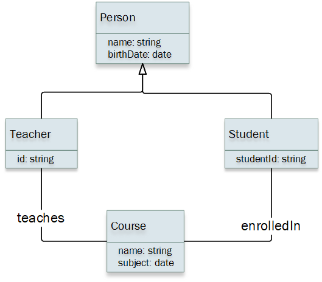

1. Introduction and Goals
1.1. Requirements Overview
The application runs online. It also makes use of Solid Pods to not keep the information centralized, in order to preserve user’s privacity. In this way, it decentralizes most of the user’s data. Users will be shown a map where they can add locations, review scores, comments, etc to create their own personalized maps. Each user will also be able to fully manage the information they provide to the application.
The full list of requirements of the application can be found in the assignment page.
1.2. Quality Goals
The requirements to be met are the following:
1.2.1. Availability:
-
The system must have the capacity so the access to the data is totally reliable and consistent for users in order to make their operations with the system.
1.2.2. Decentralization:
-
All the information used by the system must be provided by the users, or had given the system the permissions in order to obtain that information.
1.2.3. Testability:
-
The system must be testable in order to make a robust, secure and bug free system.
1.2.4. Secure:
-
The system will carry out checks on potentially dangerous decisions for the user, such as to provide personal data to the system to make more personal the interaction with the system. We will also ensure that the requests and responses between client and the API are not compromised.
1.2.5. Accessibility/Usability:
-
The system must be easy to use for beginners or people without previous technical knowledge. Likewise, the system should provide the necessary help to the user to be able to navigate through the program without any doubt, in addition to having to be accessible to all people. In order to do that, we decided to follow a minimalist rounded style.
1.3. Stakeholders
| Role/Name | Contact | Expectations |
|---|---|---|
Council of Brussels |
The entity that hire us to deliver the LoMap site. They should help to find the main requirements. |
|
Teachers |
The teachers of the subject, who will control the process of this project and help us when we need. |
|
Developers |
The students of this team that are going to develope the project. They also will manage all the architecture |
|
Final users |
The future users of the site when it’s published. They can help to find some important requirements. |
|
Solid community |
Users and developers related with the Solid Project. Since this project will use Solid, the community could be interested and also could help us in the process. |
2. Architecture Constraints
2.1. Technical constraints
| Constraint | Explanation |
|---|---|
Solid |
We must store the shared information in a personal Pod according to the SOLID principles. The data is stored in a decentralized way. |
GitHub |
We must track the code and share it in a public repository of GitHub. |
Continuous integration system |
The application has to be accessible and deployed using a continuous integration system. |
2.2. Organizational constraints
| Constraint | Explanation |
|---|---|
The team |
We are a group of four and we should get along with each other, to not hinder the work. |
Due dates |
We will try to finish our own issues with one or two margin days, to be able to solve the problems that can come out. |
Meetings |
We must have frequently meetings to know the updates of everyone. At least to weekly, one in our laboratory session. |
2.3. Political constraints
| Constraint | Explanation |
|---|---|
Documentation |
We will follow the arc42 template |
Language |
The project will be done in English to reach more public and find more information. |
Design |
The application will have a simple aesthetic and its interface should be intuitive. |
3. System Scope and Context
3.1. Business Context
| Constraint | Explanation |
|---|---|
User |
Users interact with system by adding new places and being able to see the list of places that they have added. |
Solid PODS |
Solid PODS have information about user’s addresses. We must store the shared information in a personal Pod according to the SOLID principles. The data is stored in a decentralized way. |
Database |
The database is used to store only the places' ID and coordinates just for the purpose of optimizing the app’s performance. |
OpenStreetMap API |
The OpenStreetMap API is used to show a map with the places that the user has added. It is also used to let the user select in a map the place he wants to add. Lastly, it is also used for the autocomplete feature. |
3.2. Technical Context
| Technical Elements | Description |
|---|---|
SOLID specification |
Set of design principles for writing clean, maintainable, and scalable code that we will be using in this project. |
SOLID PODs |
All the personal information of the users will be stored in "Pods" in order to follow the SOLID principles and build an app that takes in count user privacy, these pods will be fully stored locally in the user machine. |
GitHub |
We are going to be using GitHub as the control version software, GitHub is a virtual workspace for developers where we can store our code, and keep track of changes and issues. |
React.js |
For the frontend we are going to use React, React is a widely-used JavaScript library that offers high flexibility and modularity, it also has a large community which will be useful in case of future problems during the development of the app. |
4. Solution Strategy
4.1. Technology decisions
We have made the following technology decisions:
-
Database: MongoDb
-
We have decided to work with this non-relational database mostly because it works well with Node.js. Its ease of use and the fact we have used this type of database in other subjects makes it the best option for us.
-
-
Branching strategy: One branch per person.
-
We will work with both master and dev branches and then each team member will have its own branch. From our point of view, this is the best way for organizing our code updates minimizing collisions as much as possible. We also decided to use this because some team members have already taken part of projects using the same strategy and have had good experiences.
-
-
Coding language: Javascript
-
As we decided to work with Node.js and React.js, the language we will use is Javascript.
-
-
Map API: OpenStreet Maps API
-
We decided to use OpenStreet Maps mainly because it’s completely free, not like Google Maps, which was our first option. However, it´s a very used API too.
-
-
Backend technology: Node.js
-
We decided to work with Node because it is a well-known backend technology and also one of the best ways to implement SOLID Pods.
-
-
Frontend technology: React.js
-
We do not have previous experience with frontend frameworks so its popularity and ease of learning was what made us to choose this technology.
-
4.2. Decisions about the top-level decomposition of the system
Our system will follow an MVC architecture. In this way, the visual part will clearly be separated from the database requests and then both of them will be coordinated by the controller part.
4.3. Decisions on how to achieve key quality goals
-
Availability will be achieved by making sure that all the interactions the users make with our application are totally reliable and consistent. We will ensure that the system will do what it is supposed to.
-
Decentralization will be achieved by using SOLID Pods. By using them, almost all data will be stored in each user’s Pod achieving a fully decentralized system for all the important information.
-
We will also work on testability by making most of the functions testable. This will let us create unit tests for these functions, and thus we will minimize the number of bugs.
-
Security will be achieved with decentralization and by doing a strict control of permissions. This means users will only be able to access the data they are supposed to.
-
Accessibility/Usability will be reached by making a user-friendly and easy to use interface. This means we will work on features like color contrast, keyboard accessibility, etc.
4.4. Relevant organizational decisions
-
Communication
-
We have created a Whatsapp group for short questions or messages.
-
We also use Discord for making meetings if we need to.
-
It is important to mention that even, although we use these channels, all decisions are always documented on the GitHub repository.
-
-
"No day before" policy
-
We have decided that all work will be done a couple of days before the deadline. This way, we avoid any potential last minute problems.
-
-
Language
-
The project will be done in English and the communication between the team members will be in Spanish (our first language).
-
5. Building Block View
5.1. Whitebox Overall System
- Motivation
-
The LoMap application lets the user add and manage personal places of interest around the world. Its structure is designed in an almost full decentralized way, ensuring user’s privacy. This is achieved using PODs.
- Contained Building Blocks
| Block name | Description |
|---|---|
User |
It is the person who uses the application and who owns the Pod. |
LoMap |
It is the application that allows the user to manage his places. |
Map API |
It is the API that allows the user to visualize the places on a map and also allows the autocompleting function. |
Database |
It is the database that stores small information about the places to improve the app performance. |
Pod |
It is the personal data store of the user. It is used to store the places and the all the information about them. |
5.2. Level 2
- Motivation
-
Inside LoMap, the system is separated by the Frontend and the Backend.
- Contained Building Blocks
| Block name | Description |
|---|---|
Frontend |
It is the part of the application that the user interacts with, and that uses the map API. |
Backend |
It is the part of the application that manages the data and the communication with the database. |
5.3. Level 3

- Motivation
-
Inside LoMap, the system is separated by the Frontend and the Backend.
- Contained Building Blocks
| Block name | Description |
|---|---|
MyPlaces |
Shows the user’s saved places in a map and a list. |
AddPlace |
Lets the user add a new place selecting it on a map. |
Social |
Lets the user see the places of his friends. |
Settings |
Lets the user change the app settings. |
Profile |
Lets the user manage his profile information. |
FrontendAPI |
It is the API that allows the Frontend to communicate with the Backend. |
RESTAPI |
It is the API that allows the Backend to communicate with the Database. |
Solid |
It is the API that allows the Backend to communicate with the Pod. |
6. Runtime View
6.1. Adding a new place
The user will be able to add any selected place in the map and add any information about it. The user will be able to add a place by clicking on the map and then clicking on the Add button. The place will be added to his Pod.
6.2. Viewing a place
The user will be able to view all his places in the map and in a sidebar with all the information about the place.
6.3. Logging into the application
The user will be able to view all his places in the map and in a sidebar with all the information about the place.
7. Deployment View
7.1. Infrastructure Level 1
- Motivation
-
For development and testing the execution environment we are working on each student’s machine. But when we´ll reach the production phase, we must deploy it in a Dockerized environment.
- Quality and/or Performance Features
-
We have chosen MongoDb to maximize the performance with Node.js. In the production phase, the user experience should be maximized with a good internet connection, but this is something we cannot control.
7.2. Infrastructure Level 2
- Motivation
-
Above we are explaining the Dockerized environment of the production phase.
- Quality and/or Performance Features
-
We are going to use a cloud platform, Amazon Web Service, to deploy our software. To launch it, we will use Docker environment. This one will manage the frontend, backend and database to build and run the application.
8. Cross-cutting Concepts
8.1. Domain model

8.2. Domain concepts
| Concept | Description |
|---|---|
Map |
It’s the main part of the interface, we obtain it through Google Maps API. The map is where the user can mark selected places an watch places marked by their friends. |
User |
We only will save the ID of the users and the list of IDs of their friends in the site. |
Friend |
A friend is an user that has been added as friend by another user. |
Mark |
A mark identifies a location on the map. Marks are created by the users and once is created they can add rating, pictures, description … We won’t save any of that in our database. All that information will be stored in the user’s pod. |
Pod |
It’s an external store provided by SOLID Project where will be saved the information of the users or the places. |
8.3. Security
In this subject, we will use the security options the frameworks and libraries we will use give us. And since we are developing a decentralized site with the SOLID Project, all the users data will be stored in their own pods and just users with pods and permission could watch that information. In our database we only will save the user’s ID and his list of friend’s IDs.
8.4. User experience
Our intention is to make an intuitive site where the user can see all the important modules just entering. The map will be placed occupying the main part of the screen. On the map the user will see their own marks and friends marks, that will be slightly different. At the left of the screen the users will see a module with diverse information of the locations that are in the screen and updates of their friends. The ratings of the places will be represented with stars to achieve an easy understanding. Finally, at the bottom of the site we will place information about us and the site.
9. Design Decisions
| Technology | Pros | Cons |
|---|---|---|
React |
It has a big community full of documentation and solutions to our posible problems. |
Due to its minimalist style, it leans to have lot of packages and external dependencies |
Node.js |
One of the most used network app with lots of code. The Node packaged modules, npm, have already become huge and still growing. |
APIs used in NodeJs are unstable as they change frequently. It´s a bit difficult to deal with relational databases. |
MariaDb |
Easy to install, clear configuration files and works well with SQL standard. |
For technical support, users have to depend on the knowledge base and fórum. Is no longer completely compatible with MySQL, which makes migration a tedious process. |
9.1. AD-01: Front-End technology
-
Status: Accepted
-
Context: We had to choose the Front-End technology to use in our web development.
-
Decision: We decided for React due to its huge community to solve our posible future problems. The other option was Angular or Vue, but the minimalism style of React made us selected it to make are work clearer. Vue is like the best of both worlds but the fact that its not supported by a big company, it has less support and popularity, takes us back.
-
Consequences: In this way we will take our first steps in React, hoping to solve our probleams easily.
9.2. AD-02: Back-End technology
-
Status: Accepted
-
Context: We had to choose the Back-End technology to use in our web development.
-
Decision: As we selected JavaScript as our language code, we have guided our decision to Node.js. Its one of the most used network apps so it gave us trust. For example, the last time I read one statics about back-end technology, Node.js had 49% of popularity. In this decision we didn´t have much doubt
-
Consequences: From now, we will start learning to work with Node.js. None of us has worked with Node earlier, so we wish we had few problems.
9.3. AD-03: Database server
-
Status: Proposed
-
Context: We started thinking about which database server use in our project. Most of our data will be stored in PODs following the SOLID principles, so the database has lower priority.
-
Decision: We had to choose between a relational or non relational database. The most of us had worked before with HSQLDeveloper so this could have been an option, but didn´t win the spot. We selected, may change later, to try using MariaDb to experiment with a different database. A disadvantage that we read is that Node.js, the backend technology selected, works worst with relational databases.
-
Consequences: For now, we will try to work with MariaDb but this may change in the future.
9.4. AD-04: Definitive Database server
-
Status: Accepted
-
Context: At first we thought using MariaDB as it is explained above. However, the fact that we will work with Node.js and that it doesn´t work well with relational databases, warned us.
-
Decision: As we haven´t started to implement yet, we decided to change to a non relational database to take less risk. Some of us had worked with it before and its easy to learn.
-
Consequences: We will use MongoDb as a database.
9.5. AD-05: Definitive API Maps
-
Status: Accepted
-
Context: At first we thought using Googple Maps because we are used to it. Some of us had worked with it before in aother subject. But when we searched more, we have seen that Google Maps API has a monthly limit of free requests.
-
Decision: The range of decision is not very big, so we read about OpenStreet Maps and, as it is completely free and also popular, changed our decision.
-
Consequences: We will use OpenStreet Maps.
9.6. AD-06: Postman
-
Status: Accepted
-
Context: We had trouble to start working at te backend. Mainly because it´s new for us and abstract. So to make it easier, we looked for a platform to let us see what we are doing.
-
Decision: We chose Postman API Platform, which is an API platform for building and using APIs. It let us see the process of the REST methods and experiment with the connection between MongoDB and Node.
-
Consequences: We will use Postman API Platform.
10. Quality Requirements
10.1. Quality Tree
Pendiente
10.2. Quality Scenarios
| Quality attribute | Scenario | Approach |
|---|---|---|
Availability |
We want to offer a wide range of possibilities and submaps in which the user can search for all the information or location they want. |
We want to develop the option so that the user can investigate by zooming in on the map and seeing submaps starting from a main map in order to see the locations as clearly as possible. |
Usability |
Quick and easy navigation for not experienced users. |
The main objective is to achieve a map and navigation within the application that is fast and indicative for users. That navigation operations such as scrolling on the map, zooming or the implementation of a search engine are easy to use and indicative for the end user. |
Decentralization |
The isolated and centralized use of users' personal information and updating based on user preferences |
"" |
Privacy |
We do not want a fraudulent use of the user’s personal information |
Only the information of the user and/or friends will be shown if the user requests it, otherwise private information will never be shown. |
Accesibilty |
We want the application to be usable for all the potential users that the final product may have. |
Navigation and use of bright colors and aids to facilitate the use of the application |
11. Risks and Technical Debts
11.1. Risks
| Risk | Problem description | Consideration | Masures to be taken |
|---|---|---|---|
High |
Lack of knowledge about the technologies |
Most of the technologies used in the project are new to the team members. This requires extra effort at the beginning to learn them. |
Spend time learning and getting to know the new technologies. |
Medium |
Huge proyect |
We are under pressure to have the project completed to what is needed by the deadline. |
It is therefore necessary to have good communication and a good working dynamic among the members of the team. |
Medium |
Time availability |
Due to the workload between different subjects and the problems of time compatibility. |
It is necessary to have a good organisation and distribution of time between the members of the team. |
11.2. Technical debts
| Relevance | Technical debts | Considerations |
|---|---|---|
High |
Solid API |
Because this is the first time we work with SOLID principles, we have no prior knowledge. This affects the project development process. |
Medium |
React and JavaScript |
Some of the team members do not know JavaScript. Also, none of them are familiar with the React library. This can cause difficulties at the beginning of the project that will disappear as time goes by. |
Medium |
Node.js |
None of the team has any knowledge of this platform, so there is an initial effort to learn how to use it. |
12. Glossary
| Term | Definition |
|---|---|
SOLID |
SOLID is a web decentralization project that securely stores users data in private data stores called Pods. |
SOLID Pod |
It’s a data store where users can keep their information. Only selected users will be able to access to that information. |
JavaScript |
JavaScript is a high level programming lenguage very used int the World Wide Web, especially in the client side. |
Node.js |
Node is an open source back-end enviroment that lets developers use JavaScript for server side scripting. |
React |
It’s an open source JavaScript library that helps building efficient interfaces. |
API |
Software that helps two or more computer programs to comunicate to each other. |
Google Maps API |
It’s an API by Google that allows you to use the power of Google Maps and put it directly on your own site. |
About arc42
arc42, the Template for documentation of software and system architecture.
By Dr. Gernot Starke, Dr. Peter Hruschka and contributors.
Template Revision: 7.0 EN (based on asciidoc), January 2017
© We acknowledge that this document uses material from the arc 42 architecture template, http://www.arc42.de. Created by Dr. Peter Hruschka & Dr. Gernot Starke.